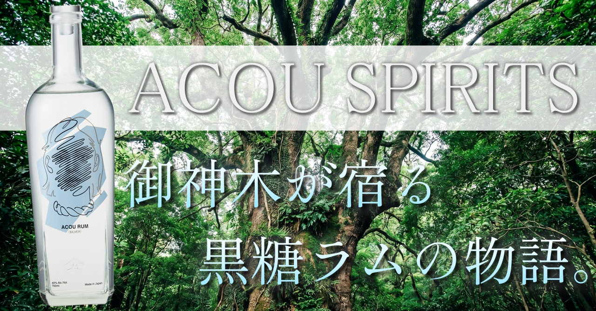

こんにちは、クロフク編集長です。
鹿児島県の南端、薩摩半島の指宿市。「東洋のハワイ」と呼ばれるその土地に、樹齢数百年の御神木が立っています。その木の名は、アコウ。根を地に張り、激しい風雨にも倒れることなく、何百年も宮ヶ浜の地を見守り続けてきた木です。
その御神木の名を冠したクラフトスピリッツが、ACOU SPIRITSです。
指宿の黒糖と地下水で仕込む、まっすぐで力強いラム。今回はその蒸溜所の物語を辿ってみたいと思います。

こんにちは、クロフク編集長です。
鹿児島県の南端、薩摩半島の指宿市。「東洋のハワイ」と呼ばれるその土地に、樹齢数百年の御神木が立っています。その木の名は、アコウ。根を地に張り、激しい風雨にも倒れることなく、何百年も宮ヶ浜の地を見守り続けてきた木です。
その御神木の名を冠したクラフトスピリッツが、ACOU SPIRITSです。
指宿の黒糖と地下水で仕込む、まっすぐで力強いラム。今回はその蒸溜所の物語を辿ってみたいと思います。
指宿市の宮ヶ浜地区。温暖な気候と豊かな土壌、そして清らかな湧水に恵まれたその地は、遠くハワイを思わせる景観から「東洋のハワイ」とも称されてきた場所です。
大山甚七商店の宮ヶ浜蒸溜所は、そんな指宿の恵みを丸ごと受け取るような場所に建っています。蔵に湧く地下天然水、鹿児島で育てられたサトウキビから生まれるオーガニックの糖蜜と黒糖——この土地でしか生まれ得ない素材が、アコウのラムを支えています。
ACOU SPIRITSという名前には、「地の力を湛えた一滴を」という思いが込められています。厳しい自然の中で力強く生き続けるアコウの木のように、土地と共に生きるスピリッツを造りたい、という意志です。
1875年——明治8年。大山甚七商店の前身は、呉服商でした。布団や着物を商いながら、その傍ら「富久泉」という銘柄の芋焼酎を造っていたのが、この蔵の始まりです。
その後、焼酎の価格競争が激化した1993年頃には製造を一時休業し、コンビニのフランチャイズ経営で事業を継続した時期もあります。そして2003年の焼酎ブームに合わせて製造を再開し、蔵は再び動き出しました。
2023年1月、6代目となる大山陽平が代表の座を継ぎます。彼が掲げたのは、「効率より個性」。焼酎だけに留まらず、クラフトジンやクラフトラムといった新たな挑戦を積み重ね、2025年にはACOU SPIRITS株式会社を設立するに至りました。
150年近い歴史を持ちながら、常に前へ踏み出し続ける蔵。その足跡は、アコウの木が何百年も根を張りながら成長してきた姿に重なります。
ACOU SPIRITSのラムは、鹿児島という土地と深く結びついた原料で仕込まれています。指宿市で製造されたオーガニックの糖蜜と、鹿児島県産の黒糖。そして蔵に湧く地下天然水。
蒸留には銅製カラム式蒸留器を使用します。その製法は、サトウキビ由来の瑞々しいアロマを引き出しながら、スムースでありながら芯のある味わいを実現するためのもの。
ACOU RUM WHITEは、そのアプローチを体現したスタンダードのホワイトラムです。ESSEふるさとグランプリ2023で金賞を獲得した実績が、その品質を裏づけています。
ストレートで飲めば、サトウキビ由来の甘い香りとミネラル感が広がります。ソーダで割ればモヒートのベースとして申し分なく、一口ごとに指宿の土地を感じられる一本です。
ACOU RUM SILVERは、ホワイトをベースにさらに丁寧にろ過・精製を重ねた、よりクリアな味わいのラムです。クセのない透明感が際立ち、カクテルベースとしても高い評価を受けています。
ソーダで割るだけで、サトウキビ由来のやわらかな甘さがすっと広がる。余計なものを削ぎ落としながら、ラムらしい骨格はきちんと残っている。クセのなさの中に、ちゃんと個性がある一本です。
ACOU SPIRITSは、熟成の世界にも踏み込んでいます。
2025年にリリースされた「ACOU RUM Aging α FIRST EDITION」は、バーボン樽で3年以上熟成させた複数の原酒をブレンドして仕上げた、初の熟成ラムです。アルコール度数は52%。指宿の温暖な気候がもたらす熟成環境が、短い年数のうちに深い複雑さを生み出しています。
バニラ、キャラメル、熟したピーチのアロマ。トロピカルフルーツの甘さとバーボン樽由来のウッディな奥行き。飲み口はスムースでありながら、後半にかけて力強い余韻が続きます。度数の高さを感じさせない、しなやかさを持った一本です。
「FIRST EDITION」という言葉には、これが始まりに過ぎないという宣言が込められている気がします。
ラベルには指宿ゆかりのイラストレーターによるラインアートが描かれています。飲み終えた後は花瓶として使えるという設計も、この蔵らしい遊び心です。
最新の製品情報や取扱店については、ぜひACOU SPIRITSの公式サイトでご確認ください。